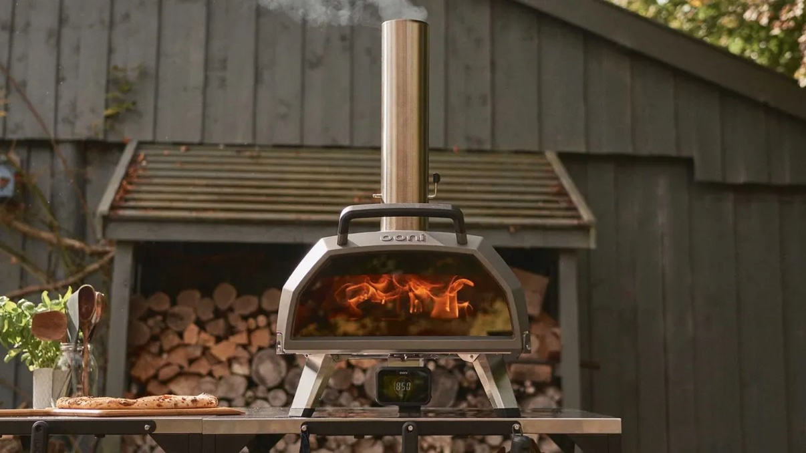

Ooni Karu 2 Pro · Top of the line · The main attraction

This is not a kitchen oven. This is over $1,000 worth of pizza oven: the Ooni Karu 2 Pro ($849) plus its propane gas burner ($140), $1,071.58 all in with tax, ordered for this competition. It is the main attraction, and anybody who has never cooked a pizza in a top-of-the-line pizza oven is about to find out what the difference tastes like.
Don’t take my word for it. Homes and Gardens tested this exact oven on seven pizzas and more, and called it the best pizza oven you can buy.
Homes and Gardens review: the best pizza oven you can buy
| Spec | Value |
|---|---|
| Model | Ooni Karu 2 Pro, multi-fuel |
| Max temperature | 950°F (500°C) |
| Preheat | 15 minutes |
| Pizza time at full heat | About 60 seconds |
| Cooking area | 17 inches, fits 16-inch pizzas |
| Internal height | 5.7 inches |
| Stone | Cordierite, 43 cm, 1.5 cm thick |
| Fuels | Wood, charcoal, or gas with the Karu 2 Pro gas burner |
| Temperature readout | Ooni Connect Digital Temperature Hub, front display plus Bluetooth to phone, with digital food probe |
| Door | Borosilicate glass with ClearView airwash |
| Size and weight | 50 x 81 x 83 cm, 26.75 kg (about 59 lb) |
| Our setup, all in | $1,071.58 (oven $849 + propane burner $140 + tax) |
Insist on wood? If you are a good enough cook to insist on wood-burning, bring your own wood. The oven does wood and charcoal beautifully, and a wood-fired bake is on the table for cooks who want it, but on the first night the wood is yours to bring.
First firing. The oven gets a full 30 minute heat soak before the first pizza goes in, so the stone is properly hot from the very first bake.
How a pizza cooks in it. Launch the pizza, rotate it every 20 to 30 seconds so it browns evenly, and pull it in about 60 seconds. Launch, turn, timing: that is where the skill shows, and that is what the judges taste.
A kitchen oven tops out around 500 to 550 degrees and takes most of ten minutes to bake a pizza. This oven runs nearly twice as hot and finishes in about a minute. That heat is what makes a real pizza crust: fast rise, leopard-spotted char, cheese bubbling while the middle stays tender. When every cook works out of the same 950 degree oven, the difference between pizzas is the cook, not the equipment. That is the whole point.